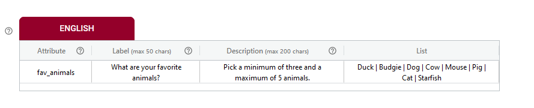
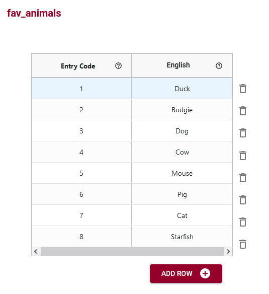
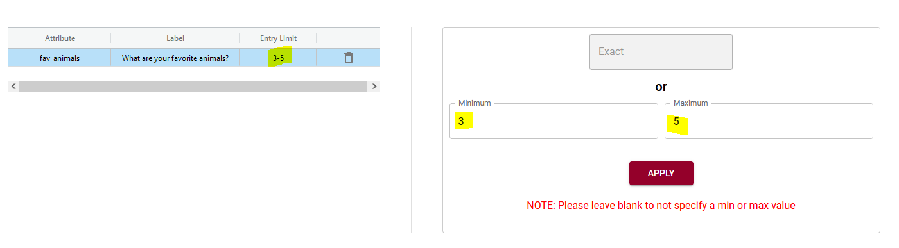
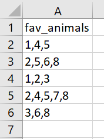

Cardinality refers to the number of occurrences of an element. For an OCA schema, the cardinality lets you define how many entries may be required for each attribute.
For example, if you allowed one and only one entry in a data record for an attribute, you would set an exact cardinality of one.
However, if you allow an array of entries for data (for example in a multi-selection of a questionnaire) you may wish to include cardinality.
For example, you are collecting survey data and have a question about what people’s favorite animals are. You want them to select between 3 and 5 animals from a list that you provide.
First you set the datatype to be an array. It will be numeric because you will use number codes for your animal choices.

You write your label to be your question and tell the user that they will need to pick between 3 and 5 animals in the description.
You create an entry code table where numbers will be what is recorded in your data table, and you add English labels to each of your animals.
You would then add cardinality rules that a minimum of 3 and a maximum of 5 animals must be selected.
For data entry, records will look like this (note that there is only one attribute in this example schema and so the data table will have only one column of data – not the world’s best survey!).
If you only wish to specify a maximum of 5 animals selected, you can leave the minimum blank. Alternatively, to have a minimum of 3 animals selected with no maximum you would leave the maximum blank.